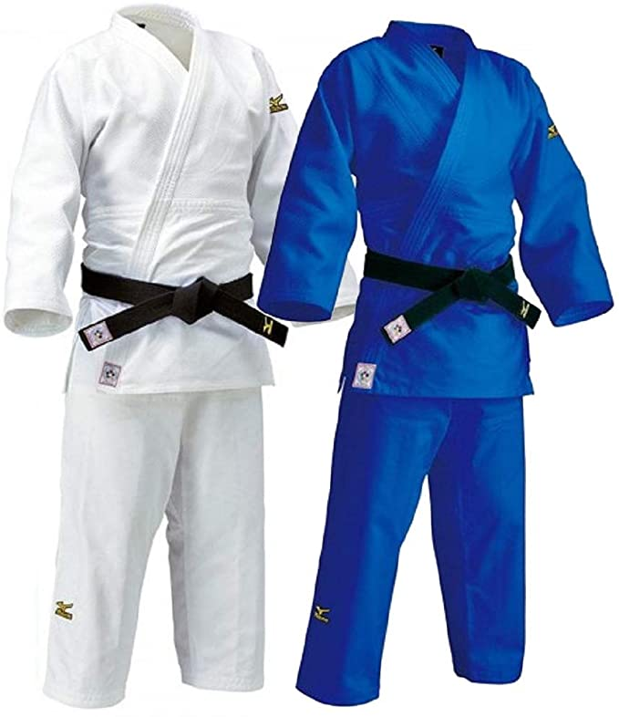

El judo, o camino hacia la flexibilidad, fue creado por el maestro japonés Jigorō Kanō en 1882, conocido en ese entonces como Kano-Ryu-Jujutsu, y enriquecido por el maestro Kyuzo Mifune después de la muerte de Jigoro Kano, período en el que Mifune consolidó la técnica y elegancia con la que se conoce al judo hoy día. El maestro Kano recopiló la esencia técnica (proyecciones, luxaciones, inmovilizaciones, estrangulaciones, desarmes y golpes) y táctica (desplazamientos, posicionamientos, transiciones, métodos de respiración, etc.) de dos de las antiguas escuelas clásicas de combate cuerpo a cuerpo japonés medievales, adaptándolas a la simulación de un combate deportivo (randori) en tiempo real. Nótese que hasta finales del siglo XIX estas técnicas eran enseñadas sin entrar en combate activo, pues varias de estas (como las luxaciones a las rodillas, a la cadera, el cuello o a la columna) se consideraban demasiado peligrosas para ser incluidas en un formato deportivo. El maestro Kano experimentó, seleccionó y estructuró las técnicas que podían aplicarse en un combate deportivo sin un alto riesgo de lesiones. Las técnicas en las que el maestro Kano se inspiró fueron derivadas de las enseñanzas de los estilos de ju-jitsu, Tenjin Shin'yō-ryū (天神真楊流) y Kitō-ryū (起倒流), dos de las escuelas tradicionales de lucha cuerpo a cuerpo practicados por los guerreros medievales o samurái, con armadura en el campo de batalla hasta el inicio del siglo XIX en Japón. El maestro Kano reunió las técnicas en un solo formato, dentro de su escuela, el Kodokan. Esta escuela pronto compitió y derrotó a otras escuelas de ju-jutsu (o ju-jitsu o jiu jitsu, como también se escribe y conoce en distintos países) de Japón hasta convertirse en el estilo imperante, destacando entre estos enfrentamientos la legendaria rivalidad marcial entre Kodokan y la escuela de Totsuka.
Controversia entre judo y jiu-jitsu
Historia
Hubo una controversia, al menos aparente, entre judo (Camino de la Gentileza) y ju-jutsu / ju-jitsu / jiu-jitsu (distintas formas de ortografía para el mismo concepto, según cada país o fonética) (arte de la gentileza), puesto que en las primeras décadas del desarrollo del judo Kodokan, los practicantes y discípulos de Jigoro Kano, y él mismo fundador, no tenían inconveniente en declarar que lo que ellos practicaban era "una escuela moderna de Ju-Jutsu". De tal forma que el mismo Kano en su libro "Judo Kodokan" declara, palabras más o menos: "a mi escuela de Ju-jutsu la llamaré Kodokan judo". Incluso sus discípulos al viajar por el mundo para difundir su arte, cuando les preguntaban qué estilo de lucha practicaban y a qué escuela pertenecían, declaraban sin reticencias: "Ju-jutsu" y "Escuela Kodokan Judo, del Sensei Kano", respectivamente. Solo bien entrado el siglo XX, después de la segunda guerra mundial (1939-1945), entre las décadas del 50 y el 60, por la occidentalización del arte y la influencia de maestros como Mikonuzuke Kawaishi y otros, hicieron que sus practicantes comenzaran a usar masivamente la denominación "judo" a secas, en lugar de "Escuela de Ju-Jitsu Kodokan Judo". No obstante, los principios filosóficos que sientan la base del arte de Jigoro Kano estuvieron imbuídos desde sus comienzos y se definieron clara y formalmente en las primeras décadas del siglo XX, enriqueciendo y diferenciándose en esto del mero arte marcial tradicional japonés, para transformarse en algo más trascendente que un arte marcial, sino en "un camino para la formación y mejoramiento del ser humano". El judo es uno de los cuatro estilos principales de lucha deportiva más practicados hoy en día en todo el mundo. A partir del judo kodokan se han derivado o desarrollado las actuales formas de jiujitsu europeo, jiujitsu americano, Jiu-jitsu brasileño, sambo ruso, nihon tai jutsu, influenciando al Hapkido coreano y al krav magá israelí en varias de sus técnicas. Esto se debe principalmente a que judocas formados en Japón y sus discípulos occidentales han sido los que, a lo largo del mundo, se han encargado del desarrollo de estas otras formas de lucha.
Biografia de jigoro kano
La vestimenta usada en el judo recibe el nombre de judogi, y con el cinturón (obi) forma el equipo personal y necesario para poder practicarlo, esta deriva de la manera de vestir en Japón antes del siglo XX. Los colores de los judogi pueden variar, siendo un "judogi" azul o uno blanco, pero de preferencia es este último el más visto. El color azul o cualquier otro color que no sea el blanco solo se puede usar en competiciones en las cuales se permita, pero nunca para la realización de los katas. Los judogis en general son de algodón, de otras fibras fuertes, o reforzados. El judogi puede ser de una tela sencilla o puede tener un tramado específico, el último es más caro, pero más resistente. A los principiantes se les recomienda el más sencillo. No olvidemos que el judo es un deporte olímpico de combate, y actualmente la meta de gran parte de los practicantes de este deporte es llegar a competir en los Juegos Olímpicos. La vestimenta y sistema de grados kyu y dan por cintas y cinturones, usada en el judo fueron adoptados por el karate-do, a partir de 1922. Y por el aikido en los años treinta. Este sistema de grados, ha sido asimismo copiado o adaptado por muchas otras artes marciales, deportes de combate y sistemas híbridos modernos de desarrollo coreano, estadounidense, hawaiano, etc., en el siglo XX.
Compra un judogi El cinturón (obi en japonés) sirve para sujetar el traje. En occidente, los cinturones son siete y empiezan con el color blanco y le siguen el amarillo, el naranja, el verde, el azul, el marrón y el negro, que corresponde a los grados dan. Esta graduación progresiva fue implementada inicialmente en Francia por el maestro Mikonosuke Kawaishi, pues inclusive en Japón, es poco usada, aunque algunas escuelas preservan los cinturones blanco, marrón y por supuesto, el cinturón negro. El maestro fundador Jigorō Kanō, no poseía ningún grado por cinturón puesto que era el soke (o fundador del arte marcial), quien a su vez había sido diplomado en los estilos Tenjin Shin'yō-ryū, y la Kitō-ryū, del Jiu-jitsu clásico o Koryū budō, según el sistema clásico por juramento y diploma, o Menkyo kaiden. Actualmente, el grado más alto alcanzado después del cinturón negro, es el cinturón rojo y blanco, hasta el 8 Dan, hasta llegar al cinturón rojo 9.º Dan. El grado 10.º (décimo) Dan ha sido conseguido únicamente por trece hombres. Así que los colores del cinturón para los grados del dan en el judo, son: 1.º al 5.º dan, negro; 6.º al 8.º dan, rojo y blanco; 9.º y 10.º dan, rojo, aunque también se le permite el uso del cinturón blanco al 10.º Dan. El color de la cinta simboliza el proceso de aprendizaje gradual y crecimiento de la persona; el color se va oscureciendo con los años de dedicación y práctica. En Japón donde la popularidad, la constancia y la perseverancia posterior al cinturón negro primer dan son mayores que en Occidente los colores del cinto del judoca son tres (blanco, marrón y negro). En occidente se usan siete colores y cada uno representa algo distinto que tiene que ver con el desarrollo en esa etapa del aprendizaje. Los cinturones de colores en judo van en el siguiente orden desde el menor al mayor grado.